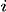
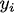
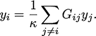
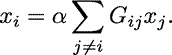
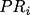
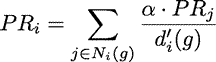

|
TL;DR. Can Google's PageRank measure be used to highlight and stop global financial contagions? Not in its raw form. In fact, in its raw form it could make things worse! But not all hope is lost...
|
The overarching question I ask here is: "Can Google's PageRank measure be used to stop global financial contagions?" By "Google PageRank " I don't mean Google search results or its Zeitgeist (although, using those would be interesting too). Instead I mean the actual algorithm Google uses to sort and display search results in terms of each results' relevance to the search query. The overarching question is pretty odd. What does a search algorithm have to do with financial folly through something like subprime mortgage provision? Nothing. So, how could Google's PageRank be used to stop financial crises spreading from one bank to the other, from one business to the other, and from one economy to the other? Well, I think PageRank might be a stepping--stone to being able to do this. However, in order to answer this we need to understand what exactly PageRank is, what it does, and where it can be applied. Without spoiling The answer has something to do with networks... obviously! In 2008, after the collapse of the investment bank Lehman Brothers, Governments' across the world participated in bailling out their largest financial institutions. This immediately led to billions of dollars (pounds Sterling, euro whatever currency) worth of tax--payers money being transferred to initiatives, such as the Troubled Asset Relief Program (TARP), to purchase bad debt from institutions that poorly lent to borrowers. The result was a more consolidated financial sector, cartel formation and LIBOR fixing, a lengthy bout of recesson, and a schizophrenic recovery. It has been argued by many whether the actions conducted by Governments were in the best interest of society, or whether their actions and policies favoured the interests of large financial institutions. Moreover, it has been argued that the use and distribution of taxpayers money was inefficient. If we can develop a measure to sort financial institutions in terms of their impact to the stablity of the network as a whole then perhaps we could make the bailing out process more efficient and stop the problems with the financial system before they escalate. Figuring out whether PageRank can be used to measure the relative importance of financial institutions could be extremely important! In network terms it is a measure of "centrality". The centrality of a node in a network is a measure that indicates the importance of a node in terms of some characteristic, which is typically associated with the nodes' degree (how many arcs or links it has in the network). There are a host of different centrality measures that make use of different characteristics. The most famous is PageRank developed by Sergey Brin and Larry Page (founders of Google Inc.), even though it is basically just the same as many others including the beta--measure developed by Gilles and Van den Brink who completely axiomatised the measure. In its simplest form, the Wolrd Wide Web (WWW) can be projected as a directed network: webpages are represented as nodes and there is an arc from one node, , to another, , if there exists a hyperlink from page to page . When the WWW is projected in this way centrality measures are used by search engines to rank websites and provide more accurate search results, irrespective of the contextual nature of the search string. Moreover, the structure of the WWW shares the same properties as many other networks, such as social networks, neural networks, e--mail and messaging conversations, protein, metabolic, and cancer cells, and economic / financial networks, which is very useful for this article! Indeed, it seems that the stucture (or topology) of all complex systems evolve a number of distinct properties: The first common centrality measure used, and the one that PageRank really built upon, was the Bonacich centrality measure which translates the network as an adjacency matrix, then takes the largest Eigenvalue of the matrix and assigns relative scores to all nodes based on the size of each nodes Eigenvalue. The outcome of this measure means that nodes that have important nodes linked to them will also be important themselves, and their importance increases with the number of nodes that link to the node. Formally, the Bonancich centrality of some node , denoted by , can be expressed as 
An evolution of the Bonacich centrality measure is the Katz centrality which measures all nodes that can be connected through a path, and contributions to distant nodes are penalised.  PageRank is a calculation applied to nodes (or webpages) in a network that measures a nodes' importance based on the relative importance of all other nodes that point (connect) to it, which is then scaled down by a factor depending on how many other nodes each node points to. In mathematical terms, the PageRank of some node , denoted by , is defined by:   as as It is directly based on the Bonacich and Katz measures (although Brin and Page do not even acknowledge these measures in their papers). It's not the most novel measure of centrality, but regardless, from the success of Google we can conclude that this is a pretty effective measure for ranking the importance of webpages. So, what has this got to do with financial crises? In order to honour all of its claims by depositors and continue lending to clients banks lend to each other. Sometimes banks have a level of claims on them that their current working capital cannot maintain, meaning that they have to borrow money from other institutions for varying periods of time and at a rate of interest determined by the prevailing LIBOR (London Inter-Bank Offered Rate), which is just the rate of interest at which banks lend between themselves. Banks are therefore connected in a network in two ways. First, if a set of banks are invested in a given project or a given industry then they are connected indirectly through some form of overlapping portfolio. Second, one bank is directly connected to another if the bank lends money to the other. Specifically we could project these relationships as a directed network, much like we did with the WWW above. If some bank, , lends to another, , then bank points to bank . The arcs in this network denote the flow of money from one bank (node) to another bank (node). Specifically, if there exists an arc from to then is in debt to . Let's assume that some bank borrows a lot of money from another under the belief that the borrowing bank will repay the other the principal plus some interest at the rate of LIBOR. If the borrowing bank cannot repay the loan and defaults then the lending bank may become insolvent and unable to repay its liabilities to depositors and other financial institutions it borrowed from, etc. The default from one institution can cascade onto others when they are linked in a network: the failure of one bank or one investment can roll over onto others both directly and indirectly connected to it. The transmission of financial crises therefore moves in the opposite direction of the arcs meaning that the node / financial intermediary with the largest impact on the stability of the network should be the node with the largest number of other nodes pointing to it. This is exactly how webpages are ranked by Google's PageRank: the more points the better. A network can be a natural way to express both the WWW and the financial system. Further still, both can be represented as a directed network where one uses hyperlinks and the other uses loans to characterise the arcs. So can we use the same technique to highlight important financial institutions and banks as PageRank does to highlight important webpages? From the description above we should find that the financial institutions which have more nodes pointing to it, i.e. more banks borrowing from it, should be those that are more crucial to the stability to the financial system as a whole. If a financial institution with a large number of other financial institutions lending to it were to fail then it would trigger a larger cascade of failure than the failure of a financial institution that borrows from only a single other node. In the most superficial way PageRank seems like a great measure for the importance of financial intermediaries: it gives a higher importance to nodes that have a larger number of other node pointing to it. Despite PageRank being imperfect for assessing which financial institutions are most critical for the functioning of the financil system all is not lost. PageRank actually seems to be a pretty good basis in which to begin assessing the impact of banks when they suffer defaults and failure. Maybe Google can save the world after all... with a little help! |